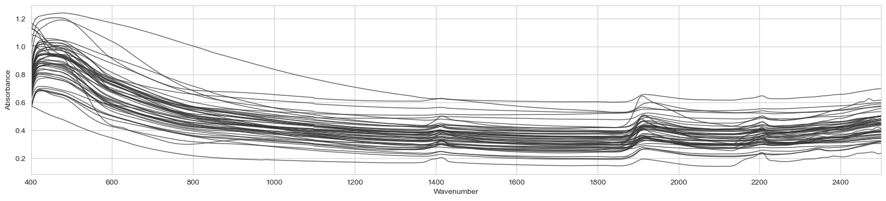
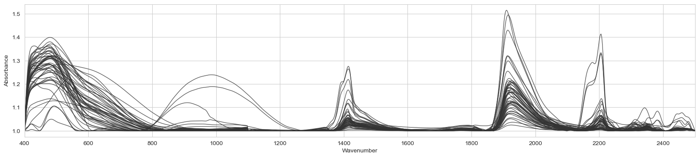
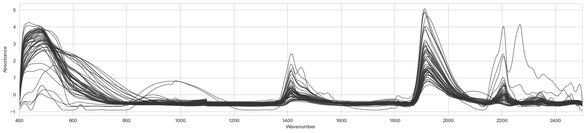
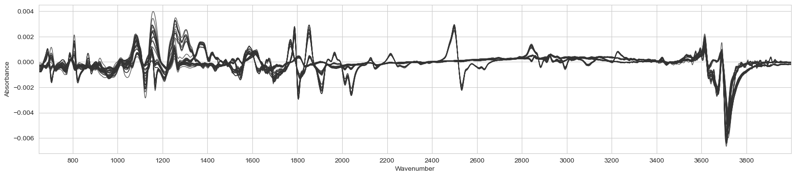
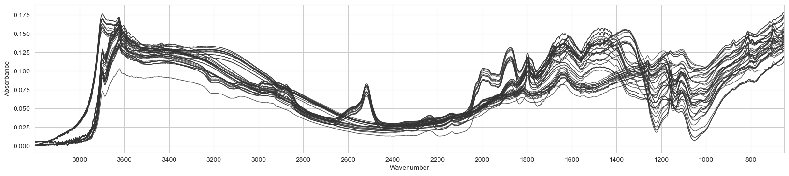
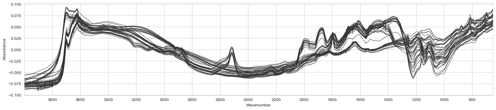
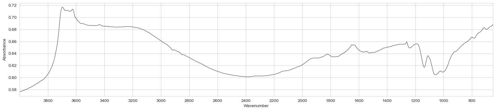
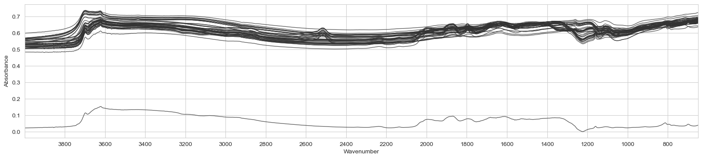
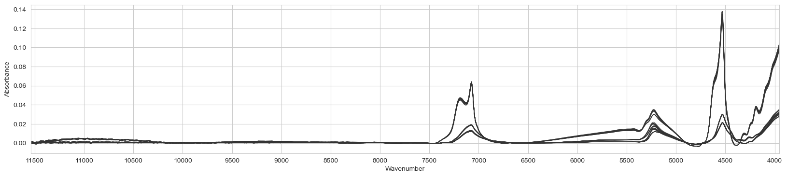

from lssm.loading import load_ossl, load_mir_kex_spike, load_nir_kex_spike
from lssm.visualization import plot_spectra
from sklearn.pipeline import PipelinePreprocessing
Scikit-learn like transformers such as SNV, Continuum removal, …
Scikit-learn transformers
ToAbsorbance
ToAbsorbance (eps=1e-05)
Transform Reflectance to Absorbance
Example:
analytes = 'k.ext_usda.a725_cmolc.kg'
data = load_ossl(analytes, spectra_type='visnir')
X, y, X_names, smp_idx, ds_name, ds_label = dataReading & selecting data ...plot_spectra(ToAbsorbance().fit_transform(X), X_names)<Figure size 640x480 with 0 Axes>
ContinuumRemoval
ContinuumRemoval (wls)
Creates continnum removal custom transformer
Example:
pipe = Pipeline([('to_abs', ToAbsorbance()),
('cr', ContinuumRemoval(X_names))])
plot_spectra(pipe.fit_transform(X), X_names)100%|██████████| 44489/44489 [00:15<00:00, 2799.63it/s]<Figure size 640x480 with 0 Axes>
SNV
SNV ()
Creates scikit-learn SNV custom transformer
pipe = Pipeline([('to_abs', ToAbsorbance()),
('cr', ContinuumRemoval(X_names)),
('snv', SNV())])
plot_spectra(pipe.fit_transform(X), X_names)100%|██████████| 44489/44489 [00:16<00:00, 2677.42it/s]<Figure size 640x480 with 0 Axes>
Log1p
Log1p ()
Creates scikit-learn np.log1p target custom transformer
SpikeDiff
SpikeDiff (names)
Scikit-learn transformer for taking the difference of spiked sample spectra.
Attributes: names (list): List of names to be processed. idx (numpy.ndarray): Indices for differences in spectra.
src_dir = Path().home() / 'pro/data/k-spiking/mir'
X, wavenumbers, names = load_mir_kex_spike(src_dir)mask_smp = np.char.find(names, 'TM') == 0SpikeDiff(names[mask_smp]).fit_transform(X[mask_smp,:])array([[ 0.0094911, 0.0096495, 0.0099458, ..., 0.0031418, 0.0031878,
0.0031162],
[ 0.0111344, 0.0113082, 0.0115104, ..., 0.0106781, 0.0104885,
0.0103892],
[-0.0050373, -0.0050678, -0.0041851, ..., 0.0219232, 0.0220633,
0.0220368],
...,
[-0.0011891, -0.0006439, -0.0006827, ..., -0.0279826, -0.0278366,
-0.028053 ],
[ 0.0015538, 0.0019338, 0.0020466, ..., -0.0167149, -0.01666 ,
-0.0168365],
[-0.011246 , -0.0102908, -0.0104773, ..., 0.0077563, 0.0077992,
0.0075839]])TakeDerivative
TakeDerivative (window_length=11, polyorder=1, deriv=1)
Creates scikit-learn derivation custom transformer
Args: window_length: int, optional Specify savgol filter smoothing window length
polyorder: int, optional
Specify order of the polynom used to interpolate derived signal
deriv: int, optional
Specify derivation degreeReturns: scikit-learn custom transformer
src_dir = Path().home() / 'pro/data/k-spiking/mir'
X, wavenumbers, names = load_mir_kex_spike(src_dir)plot_spectra(TakeDerivative().fit_transform(X), wavenumbers)<Figure size 640x480 with 0 Axes>
MinScaler
MinScaler ()
Base class for all estimators in scikit-learn.
plot_spectra(MinScaler().fit_transform(X), wavenumbers, ascending=False)<Figure size 640x480 with 0 Axes>
MeanCenter
MeanCenter ()
Base class for all estimators in scikit-learn.
plot_spectra(MeanCenter().fit_transform(X), wavenumbers, ascending=False)<Figure size 640x480 with 0 Axes>
plot_spectra(X[1], wavenumbers, ascending=False)<Figure size 640x480 with 0 Axes>
BaselineALS
BaselineALS (lam=100000.0, p=0.01, niter=10)
Base class for all estimators in scikit-learn.
plot_spectra(X, wavenumbers, ascending=False)<Figure size 640x480 with 0 Axes>
plot_spectra(BaselineALS().fit_transform(X), wavenumbers, ascending=False)100%|██████████| 24/24 [00:00<00:00, 101.46it/s]<Figure size 640x480 with 0 Axes>
SpikeMean
SpikeMean (names)
Base class for all estimators in scikit-learn.
src_dir = Path().home() / 'pro/data/k-spiking/mir'
X, wavenumbers, names = load_mir_kex_spike(src_dir)X_mean, names_mean = SpikeMean(names).fit_transform(X)
print(f'X shape: {X_mean.shape}')
print(f'Sample names: {names_mean}')X shape: (12, 1738)
Sample names: ['LUI-0' 'LUI-1' 'LUI-2' 'LUI-3' 'SPA1-0' 'SPA1-1' 'SPA1-2' 'SPA1-3'
'TM4.1-0' 'TM4.1-1' 'TM4.1-2' 'TM4.1-3']